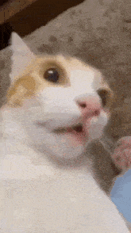
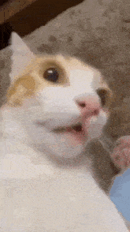

¿gato?
El gato doméstico,
llamado más comúnmente gato, y de forma coloquial minino,
michino, michi, micho, mizo, miz, morroño o morrongo, y
algunos nombres más, es un mamífero carnívoro de la familia Felidae.
Es una subespecie domesticada, por la convivencia con el ser humano, del gato montés.
 
